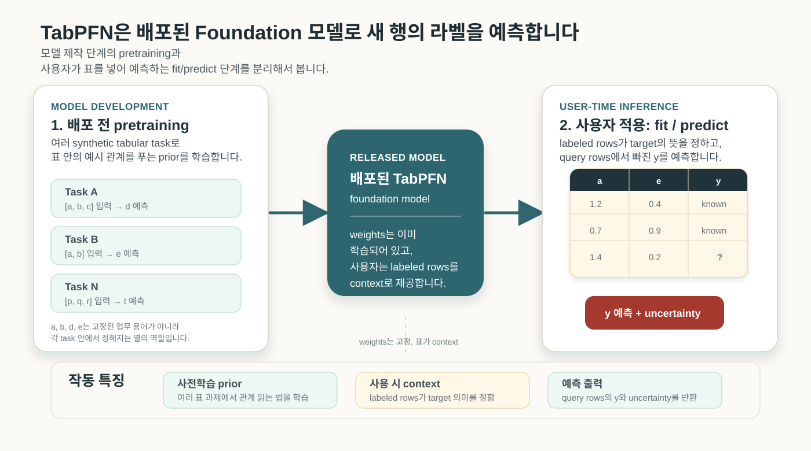
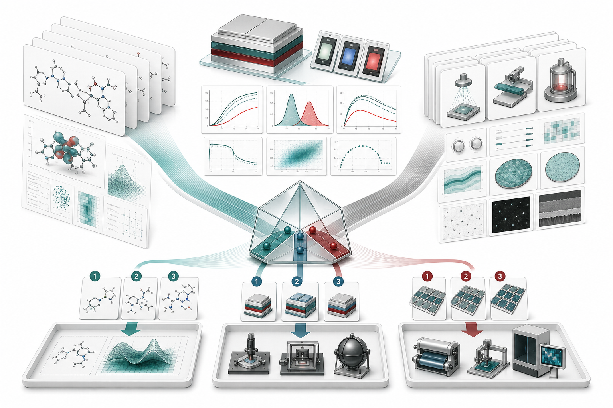

연구팀이 새 예측 모델을 검토할 때 출발점은 “우리 데이터를 후보·조건·라벨 단위로 다시 정리하고, XGBoost, LightGBM, CatBoost, TabPFN을 같은 split과 metric으로 비교해보자”입니다. TabPFN은 이 비교에서 작은 표에서도 빠르게 강한 기준을 세울 수 있고, 라벨 하나를 얻는 데 비용이 큰 후보 선별 문제에서는 다음 실험이나 계산의 순서를 줄여볼 수 있습니다.
다만 산업 데이터의 한 행은 숫자 묶음으로 끝나지 않습니다. OLED 분자 계산값에는 software, 계산 protocol, functional과 basis set, conformer, 용매 또는 host 환경, spin state, excited-state 해석이 붙습니다. 실험값에는 장비, 시료 이력, 측정 조건, 작업 순서, lot, operator, 전처리 방식이 따라옵니다. 공정과 SCM, 검사, 설계 데이터도 같습니다. 표에는 값이 들어가지만, 그 값의 의미는 만들어진 조건에서 결정됩니다.
TabPFN은 새 데이터셋마다 XGBoost나 CatBoost를 오래 튜닝하는 절차와 다르게 움직입니다. 미리 학습된 transformer가 주어진 표의 학습 행과 예측 행을 한 번에 읽고 바로 예측합니다. 데이터가 작고 라벨이 비싼 영역에서는 이 차이가 큽니다. 그렇다고 TabPFN이 암묵지를 자동으로 알아내지는 않습니다. 계산 조건, 실험 조건, 공정 recipe, 검사 기준, 공급망 이력처럼 연구자와 개발자가 알고 있던 맥락을 feature와 metadata로 옮겨야 모델이 그 차이를 읽습니다.
TabPFN Foundation 모델
표 데이터는 기업과 연구소에서 가장 흔한 데이터 형식입니다. 그런데 딥러닝이 이미지와 언어에서 보인 압도적인 성과가 표 데이터에서는 그대로 반복되지 않았습니다. 행과 열은 단순해 보이지만, 열 하나의 의미가 데이터셋마다 다르고 결측, 범주형 변수, 측정 조건, 선택 편향이 자주 섞이기 때문입니다. 그래서 실제 현장에서는 XGBoost, LightGBM, CatBoost 같은 gradient boosting 계열이 오래 강했습니다.
Nature 2025 TabPFN 논문은 이 문제를 다른 방식으로 풀었습니다. TabPFN v2는 여러 합성 표 데이터 과제로 미리 학습한 transformer를 사용하는 표 데이터 Foundation 모델1입니다. 새 데이터셋이 들어오면 긴 학습 과정을 다시 시작하지 않고, 학습 행과 예측 행을 하나의 문맥처럼 넣어 예측합니다. 논문은 10,000개 샘플, 500개 특징 이하의 소·중규모 데이터셋에서 분류는 평균 2.8초, 회귀는 평균 4.8초에 실행됐고, 4시간 튜닝한 강한 비교 모델 앙상블보다 나은 성능을 냈다고 보고했습니다.
2026년 5월 17일 현재 업데이트의 중심은 TabPFN-2.6에서 TabPFN-3로 옮겨가 있습니다. Prior Labs 모델 문서는 TabPFN-3를 오픈소스 패키지의 기본 모델로 설명하고, TabPFN-3-Plus를 API, 즉 개발자가 네트워크 요청으로 외부 모델 서비스에 데이터를 보내고 예측 결과를 받는 사용 방식 및 기업 배포용 모델로 구분합니다. TabPFN-3는 행과 특징 수 사이의 trade-off를 두고 최대 1,000,000행 × 200개 특징, 100,000행 × 2,000개 특징, 1,000행 × 20,000개 특징 범위를 제시합니다. 분류 class 수도 160개까지 올라갔습니다. PyPI release history 기준으로는 TabPFN 8.0.0이 2026년 5월 12일 올라왔고, 8.0.3이 2026년 5월 16일 배포되었습니다. 기존 5월 11일 리뷰가 언급한 TabPFN-2.6은 이제 7.0.0-7.1.x 계열의 이전 기본 모델로 보는 편이 정확합니다.
TabPFN-3 changelog를 살펴보면, Prior Labs는 이번 업데이트를 통해 이전 버전보다 훨씬 큰 표를 in-context로 다룰 수 있게 데이터 범위를 넓히고, API 사용 방식도 /tabpfn/* JSON endpoint 중심으로 바꾸었습니다. TabPFN-3-Plus API에는 thinking mode와 text feature 입력이 추가되었습니다. thinking mode는 fit 단계에서 더 많은 계산을 쓰는 방식이고, local OSS 패키지에는 포함되지 않습니다. 기존 /v1/* multipart route는 짧은 기간만 유지된다고 안내되어 있습니다. 로컬 사용자는 PyTorch 2.5 이상, n_jobs에서 n_preprocessing_jobs로의 인자 변경, fingerprint hashing과 전처리 순서 변화 때문에 v2.x와 예측이 달라질 수 있다는 점을 migration 항목에서 확인해야 합니다.
용어 정리
계산화학 용어와 머신러닝 용어를 모두 외울 필요는 없습니다. 이후 논의를 따라가는 데 필요한 표현만 짧게 정리하겠습니다.
| 용어 | 의미 | 활용 포인트 |
|---|---|---|
| Foundation 모델 | 다양한 과제로 미리 학습해 여러 하위 문제에 다시 쓰는 모델입니다. Stanford HAI는 Foundation model을 넓은 데이터로 학습되어 다양한 작업에 맞게 조정될 수 있는 모델 계열로 설명합니다. | 여기서는 “기준 모델”이라는 번역보다 원어를 유지합니다. TabPFN이 사전학습된 표 데이터 모델이라는 점을 비교 기준이라는 뜻과 구분하기 위해서입니다. |
| TabPFN | Nature 2025 논문이 제시한 표 데이터 Foundation 모델입니다. 여러 합성 표 과제에서 미리 학습한 모델이 새 표를 받아 빠르게 예측합니다. | OLED, 공정, 검사, SCM처럼 라벨이 비싸고 표본이 작은 문제에서 빠른 비교 기준을 세우기 좋습니다. |
| in-context learning | TabPFN에서는 라벨이 있는 행과 예측할 행을 같은 입력 문맥으로 읽어 빠진 라벨을 예측하는 방식입니다. 논문은 이 구조를 LLM의 in-context learning과 연결해 설명합니다. | “새 모델을 오래 학습한다”보다 “표 안의 예시 관계를 읽는다”에 가까운 관점이 필요합니다. |
| feature | 모델이 읽는 열입니다. 분자 descriptor도 feature이고, lot, recipe version, 측정 조건처럼 연구자가 중요하다고 아는 맥락도 feature가 될 수 있습니다. | 열을 많이 만드는 것보다 의사결정이 달라지는 조건을 고르는 일이 더 중요합니다. |
| provenance | 값이 어디서, 어떤 조건과 절차로 만들어졌는지에 대한 기록입니다. FAIR 원칙과 AiiDA provenance review는 재사용 가능한 데이터에서 provenance가 중요하다는 점을 강조합니다. | 계산값, 실험값, 검사값을 같은 숫자처럼 섞지 않게 해줍니다. |
| uncertainty | 회귀 예측에서 단일 값만 보는 대신 예측 분포나 구간까지 보는 관점입니다. Prior Labs regression 문서는 TabPFNRegressor가 평균, 분위수, full distribution을 반환할 수 있다고 설명합니다. | 다음 실험 후보를 고를 때 “가장 좋아 보이는 후보”와 “아직 불확실해서 확인할 후보”를 나눌 수 있습니다. |

따라서 연구자는 TabPFN을 다시 사전학습하지 않습니다. 대신 target이 검증된 labeled rows를 준비하고 예측 대상 query rows를 같은 문제로 정의합니다. 모델 사전학습 데이터에 지금 연구자가 다루는 a, e라는 열이 없었더라도, 새 표 안에 a, e, y가 기록된 labeled rows가 있으면 모델은 그 표 안에서 관계를 읽어볼 수 있습니다. 모델이 가져오는 능력은 a나 e의 프로젝트 안 의미를 미리 아는 지식이 아니라, 예시 행과 예측 행을 보고 target 관계를 추정하는 절차입니다. 그래서 OLED 계산값, 검사 recipe, SCM lot 이력처럼 이름과 의미가 프로젝트마다 다른 열도 후보가 될 수 있지만, 그 의미를 표 안에 드러내는 labeled rows와 provenance가 필요합니다.
사용 방식과 성능 기준
개발자가 처음 만나는 TabPFN은 낯선 Foundation 모델이어도 사용법은 scikit-learn estimator와 닮아 있습니다. 로컬 패키지를 쓰면 fit과 predict 흐름이 익숙하고, API를 쓰면 같은 개념을 외부 서비스 호출로 처리합니다. 아래 예시는 OLED 후보나 소자 조건 표에서 lifetime label을 예측하는 최소 형태입니다. 실제 프로젝트에서는 여기서 feature 목록, group split 기준, metric을 연구 질문에 맞게 바꿔야 합니다.
from sklearn.metrics import mean_absolute_error
from sklearn.model_selection import GroupShuffleSplit
from tabpfn import TabPFNRegressor
feature_cols = [
"homo_ev",
"lumo_ev",
"t1_ev",
"delta_est_ev",
"bde_ev",
"reorg_energy_ev",
"host_id",
"dopant_ratio",
"calculation_protocol",
"measurement_protocol",
]
X = df[feature_cols]
y = df["lt95_h"]
groups = df["scaffold_or_project_id"]
splitter = GroupShuffleSplit(n_splits=1, test_size=0.2, random_state=42)
train_idx, test_idx = next(splitter.split(X, y, groups))
model = TabPFNRegressor()
model.fit(X.iloc[train_idx], y.iloc[train_idx])
pred = model.predict(X.iloc[test_idx])
print(mean_absolute_error(y.iloc[test_idx], pred))
Prior Labs quickstart는 TabPFN을 scikit-learn 모델처럼 fit과 predict로 쓰는 예시를 제시합니다. Prior Labs regression 문서는 회귀에서 평균값, 분위수, 예측 분포를 반환할 수 있다고 설명합니다. OLED처럼 다음 실험 비용이 큰 문제에서는 단일 예측값보다 “좋아 보이는 후보”와 “불확실해서 확인할 후보”를 나누어 보는 쪽이 더 유용합니다.
| 확인할 것 | 적용 방식 | 확인 포인트 |
|---|---|---|
| 입력 전처리 | 가능한 한 원자료에 가깝게 넣고, 불필요한 scaling, one-hot encoding, 임의 결측 대체를 피합니다. 전처리를 해야 한다면 Pipeline으로 train set에서만 학습합니다. |
Prior Labs는 TabPFN이 많은 전처리를 내부에서 다루므로 과한 전처리가 성능을 해칠 수 있다고 설명합니다. 별도 전처리는 leakage 위험도 만듭니다. |
| 도메인 feature | 계산 protocol, 측정 조건, recipe version, lot 이력처럼 연구자가 아는 조건을 열로 만듭니다. | 공식 성능 가이드도 domain knowledge를 raw column만으로 배우기 어려운 신호라고 봅니다. 이 지점이 provenance 논의와 직접 연결됩니다. |
| feature 선택 | 100개 이상, 특히 500개를 넘는 feature에서는 물리적으로 의미 있는 feature와 상위 후보를 먼저 고릅니다. | transformer attention은 모든 feature를 동시에 보므로, 무관한 열이 많으면 속도와 예측력이 모두 흔들릴 수 있습니다. |
| 검증 분할 | OLED 역설계는 scaffold 또는 project group split, 제조는 time split 또는 lot split을 우선 검토합니다. | random split은 같은 계열 후보나 같은 batch가 train/test에 섞여 실제 적용 성능을 과대평가할 수 있습니다. |
| 비교 모델 | TabPFN default만 보지 말고 XGBoost, LightGBM, CatBoost, AutoGluon 같은 기준과 같은 split, 같은 metric, 같은 tuning budget으로 비교합니다. | TabPFN은 빠른 비교 기준으로 강하지만, 모든 표에서 항상 이기는 모델로 쓰면 안 됩니다. |
| metric과 calibration | ranking이면 ROC-AUC/PR-AUC, 수명 예측이면 MAE/RMSE와 예측 구간, 불량 판정이면 recall/precision을 따로 봅니다. | 평균 정확도 하나로 다음 실험 비용, false negative, class imbalance를 판단하기 어렵습니다. |
| fine-tuning | 먼저 기본 TabPFN을 비교 기준으로 돌리고, 같은 schema가 반복되거나 특수 domain shift가 분명할 때만 fine-tuning을 검토합니다. | Prior Labs 문서는 fine-tuning을 항상 해야 한다고 보지는 않으며, 1,000행 미만에서는 overfitting 위험을 별도로 보라고 안내합니다. |
| 로컬 패키지와 API | 민감 데이터와 실험 자유도가 중요하면 로컬 패키지, 인프라 관리와 text feature가 중요하면 API를 검토합니다. | API는 GPU와 버전 관리를 서비스가 맡지만, 데이터 반출·라이선스·비용 조건을 확인해야 합니다. |
성능 비교는 “TabPFN이 기존 모델을 모두 대체한다”보다 “작고 라벨이 비싼 표에서 강한 첫 후보가 생겼다”로 읽는 편이 안전합니다. Nature 2025 논문은 TabPFNv2가 10,000행, 500개 feature 이하에서 강한 gradient boosting ensemble보다 빠르고 높은 성능을 보였다고 보고했습니다. TabPFN-2.5 technical report는 더 큰 범위에서 default XGBoost 대비 높은 win rate와 TabArena 성능을 보고합니다. 다만 이는 모델 개발진의 보고서입니다. TabArena 논문은 gradient boosting tree가 여전히 실용 표 데이터에서 강하고, Foundation 모델은 작은 데이터에서 특히 두드러지며, model ensemble이 종종 최상위 성능을 만든다고 정리합니다.
| 근거 | 비교 대상 | 읽어야 할 메시지 | OLED/제조 적용 해석 |
|---|---|---|---|
| Nature 2025 TabPFNv2 | 4시간 튜닝한 강한 tabular 비교 모델 ensemble | 작은 표에서 매우 빠르게 강한 성능을 낸다는 근거 | 라벨이 비싼 후보 선별, 초기 screening, 빠른 feasibility check에 적합합니다. |
| TabPFN-2.5 report | XGBoost default, tuned tree model, AutoGluon 1.4 | TabPFN 계열이 scale과 benchmark 성능을 크게 끌어올렸다는 개발진 보고 | 내부 PoC에서는 강한 후보로 두되, 같은 split과 metric으로 재검증해야 합니다. |
| TabArena 2025 | tree model, deep learning model, Foundation 모델, ensemble | tree model은 여전히 강하고, Foundation 모델은 작은 데이터에서 강점이 크며, ensemble이 최상위권을 만들 수 있음 | TabPFN 단독 승부보다 TabPFN + 기존 GBDT + domain rule을 함께 비교하는 편이 실용적입니다. |
| Prior Labs TabPFN-3 문서 | TabPFN-3, TabPFN-3-Plus, API 기능 | 더 큰 in-context 범위, thinking mode, text feature, 빠른 prediction claim | 로컬과 API 기능 차이를 분리하고, 데이터 반출 가능성과 license를 먼저 확인해야 합니다. |
계산값의 출처와 조건
계산값은 실험값보다 정돈되어 보입니다. 하지만 OLED 분자 계산에서 “DFT를 했다”는 말만으로는 값의 의미가 정해지지 않습니다. 어떤 software workflow를 썼는지, 어떤 환경과 geometry를 가정했는지, 해당 property가 어떤 excited state 해석에 기대고 있는지가 결과의 해석을 바꿉니다.
SCM OLED 문서는 ADF/AMS에서 charge transport, exciton coupling, phosphorescence, TD-DFT, SOC-TDDFT, TADF workflow를 다룹니다. Schrödinger organic electronics 문서도 physics-based modeling과 OLED device ML을 나란히 제시합니다. 이들 solution workflow는 진입 장벽을 낮춰주지만, preset이 어떤 물리 질문에 맞는지 확인하는 일까지 대신해주지는 않습니다.
여기서 말하는 protocol은 추상적인 문서 제목이 아닙니다. 표 안에서는 값이 만들어진 절차를 가리키는 열과 값으로 표현됩니다. 예를 들어 같은 T1=2.81 eV라도 아래처럼 계산 절차, geometry, conformer 선택, 환경 모델, 검토 상태가 함께 있어야 모델이 “같은 종류의 값인지”를 구분할 수 있습니다.
| molecule_id | property | value | software_workflow | calculation_protocol | geometry_source | conformer_policy | environment_model | state_interpretation | review_status |
|---|---|---|---|---|---|---|---|---|---|
| OLED-042 | T1_eV | 2.81 | SCM_ADF_2026.1 | oled_tddft_soc_v03 | DFT_opt_from_xtb_top3 | lowest_T1_among_3 | host_proxy_CBP | local_triplet | expert_checked |
| OLED-042 | delta_EST_eV | 0.12 | SCM_ADF_2026.1 | oled_tddft_soc_v03 | DFT_opt_from_xtb_top3 | lowest_S1_T1_gap | host_proxy_CBP | CT_sensitive | review_needed |
| OLED-113 | T1_eV | 2.79 | Schrodinger_MS_2025 | oled_screening_v05 | vendor_preset_opt | lowest_energy_conformer | gas_phase | local_triplet | unchecked |
이 열들을 남긴다고 계산화학을 과하게 세분화하자는 뜻은 아닙니다. 연구자와 엔지니어가 이미 알고 있는 “이 값은 같은 숫자처럼 보여도 같은 계산 체계에서 나온 값이 아니다”라는 판단을 표 안에 남기는 방식입니다. calculation_protocol은 팀 안에서 관리하는 recipe version에 가깝고, review_status는 그 값이 전문가 검토를 거쳤는지 남기는 표시입니다. state_interpretation은 TADF, CT state, exciplex처럼 해석이 민감한 경우에 같은 energy label이 서로 다른 물리적 의미로 섞이는 일을 줄여줍니다.
메타데이터의 유무는 ML 추론에서 곧바로 드러납니다. 메타데이터가 없으면 TabPFN은 T1_eV, delta_EST_eV, LT95_h 사이의 관계를 같은 출처의 값으로 보고 학습할 수 있습니다. 반대로 protocol, 환경, 검토 상태가 들어 있으면 모델은 특정 계산 체계에서 나온 값이 실험 라벨과 더 잘 맞는지, 검토가 필요한 값이 예측을 흔드는지, 특정 host proxy에서만 유효한 관계가 있는지를 구분해볼 수 있습니다. provenance와 암묵지의 기록은 표 안에서 예측 가능한 차이를 만드는 feature 설계입니다.
기술적으로도 이 방향은 TabPFN 사용법과 맞습니다. TabPFN이 metadata를 읽는 통로는 결국 X의 feature column입니다. calculation_protocol, review_status, supplier_lot, inspection_recipe처럼 예측 시점에 이미 알고 있는 값으로 들어올 때 모델이 예측에 사용할 수 있습니다. Prior Labs feature engineering 문서는 raw column만으로 배우기 어려운 domain knowledge를 feature로 encode하라고 설명하고, 낮은 cardinality의 string은 TabPFN에 직접 넣으면 categorical feature로 자동 처리된다고 안내합니다. 자유서술형 실험 노트처럼 의미가 긴 텍스트는 로컬 패키지에서 그대로 기대하기보다 정규화된 tag, 요약 feature, 벡터화 단계를 만들거나, native text feature를 지원하는 TabPFN-3-Plus API를 검토하는 쪽이 적절합니다.
비슷한 문제의식은 TabPFN 바깥에서도 확인됩니다. ChemFM 논문은 화학 Foundation 모델을 만들 때 단순히 더 많은 분자를 모으는 데서 멈추지 않고, UniChem과 ZINC20의 정보량과 다양성을 비교해 pretraining dataset을 고릅니다. 같은 논문은 InChI를 canonical SMILES로 바꾸고 SMILES enumeration으로 데이터를 확장하는 전처리 과정도 명시합니다. MACE foundation models 저장소도 model table에서 training dataset, level of theory, target system, license를 함께 적습니다. atomistic foundation model에서도 “어떤 계산 수준과 어떤 데이터 범위에서 배운 모델인가”를 드러내는 일이 모델 사용 조건의 일부가 되고 있습니다.
TabPFN은 ChemFM이나 MACE처럼 분자 구조나 원자계의 물리량을 직접 학습한 모델은 아닙니다. 하지만 연구자들이 더 큰 foundation model을 만들면서 데이터 출처, 계산 수준, 전처리, 적용 범위를 같이 정리해가는 흐름은 TabPFN 활용에도 그대로 참고할 수 있습니다. 표 데이터에서도 같은 태도가 필요합니다. 데이터를 많이 모으는 것만으로는 부족하고, 각 값이 어떤 계산·측정·검토 절차를 거쳐 만들어졌는지 모델이 읽을 수 있는 형태로 남겨야 합니다.
실험 데이터는 더 까다롭습니다. Materials Experiment Knowledge Graph 논문은 재료 실험 데이터가 장비 설정, 시약 순도, 실험 단계 순서에 민감하므로 실험 provenance를 schema에 담아야 한다고 설명합니다. Material Data Hub 문서는 conditionObserved, parameterControlled, process, processReference, uncertainty처럼 조건과 공정 이력을 표현하는 항목을 둡니다. OLED 소자 데이터라면 host/dopant 이름과 효율만으로는 부족합니다. layer thickness, doping concentration, device area, 초기 휘도, 측정 온도, encapsulation, substrate lot, 장비 calibration, 측정 recipe, aging protocol, 실패 사유까지 들어와야 합니다.
암묵지의 기록 방식
여기서 말하는 암묵지는 연구자가 몸으로 익힌 판단입니다. 논문이나 실험표에는 잘 쓰이지 않지만, 실제 결과에는 영향을 주는 지식입니다. 예를 들어 “증착 rate가 안정된 뒤부터 기록한다”, “이 chamber는 maintenance 직후 첫 run을 버린다”, “이 host/dopant 조합은 film이 조금 흐리게 보이면 lifetime이 흔들린다”, “특정 supplier lot은 정제 직후와 보관 2주 뒤가 다르다” 같은 판단입니다. 숙련자에게는 당연하지만, 표에는 rate, recipe, material_id, LT95만 남는 경우가 많습니다.
최근 재료 연구에서는 암묵지를 자동화, 재현성, 지식 공유를 좌우하는 기록 대상으로 다룹니다. Communications Materials 2020 논문은 실제 실험 경험을 갖지 못한 머신러닝 모델에 연구자의 tacit knowledge, 즉 암묵지를 반영하는 일이 예측 품질에 중요하다고 설명합니다. JST CRDS의 Process Informatics 제안은 숙련자의 직관과 팁을 물리화학 분석, 데이터 과학과 결합하는 방향을 제시했습니다. 자율실험 시스템 리뷰는 연구자의 직관과 경험을 자율실험 시스템 안에 넣고 다른 연구자와 공유하는 일을 중요한 과제로 다룹니다. 2026년에 발표된 pinax 논문은 데이터 분석의 시행착오와 판단 과정을 그래프 형태의 provenance 정보로 남겨, 재현성과 지식 재사용을 높이는 시스템을 제시했습니다.
암묵지는 긴 설명문으로만 남기면 모델이 읽기 어렵습니다. 아래처럼 현장의 표현을 표의 열과 값으로 바꾸면, 연구자가 중요하다고 느낀 조건을 실제 예측에서 비교할 수 있습니다.
| 현장의 표현 | 표에 남기는 방식 | 확인할 질문 |
|---|---|---|
| “maintenance 직후 첫 run은 버린다” | after_maintenance_run_index, discarded_from_training |
장비 안정화 구간이 품질 label을 흔드는가 |
| “rate가 안정된 뒤부터 봐야 한다” | rate_stabilization_time, rate_cv_after_stabilization |
setpoint보다 실제 trace가 더 중요한가 |
| “film이 흐리면 lifetime이 흔들린다” | visual_haze_grade, reviewer_rule_version |
육안·검사 코멘트가 수명 예측에 신호를 주는가 |
| “보관 2주 뒤 lot은 다르게 본다” | supplier_lot, storage_age_days, purification_date |
원재료 이력이 공정 안정성을 바꾸는가 |
Nature 2025 TabPFN 논문은 TabPFN이 mixed type, missing value, categorical feature를 자동으로 처리하고, feature engineering과 문제 정의에는 여전히 domain expertise가 필요하다고 설명합니다. Prior Labs 모델 문서는 TabPFN-3가 로컬 패키지에서 수치·범주형 데이터와 결측값을 다루고, TabPFN-3-Plus API가 native text feature를 추가한다고 설명합니다. 산업 데이터에서는 이 구분이 중요합니다. 로컬 TabPFN-3는 functional=PBE0, tool_id=chamber_07, supplier_grade=A, inspection_recipe=v12처럼 정리된 범주형 열을 잘 넣는 방식이 기본입니다. 자유서술형 실험 노트, 불량 코멘트, 구매 메모까지 직접 넣으려면 API의 text feature 지원이나 별도 텍스트 벡터화·정규화 단계가 필요합니다.
provenance 논의가 TabPFN 본론에서 벗어난 것처럼 보일 수도 있습니다. 하지만 TabPFN은 표 안의 예시 행을 보고 target 관계를 추정하므로, label의 뜻을 바꾸는 조건이 빠져 있으면 그 차이를 배울 방법이 없습니다. OLED 계산에서 T1=2.8 eV라는 값은 어떤 method, geometry, environment에서 얻었는지에 따라 다르게 해석되고, 공정 데이터의 pass/fail도 검사 recipe나 reviewer 기준이 바뀌면 다른 label이 됩니다. 따라서 provenance는 모델 밖의 문서 관리로 끝나지 않습니다. TabPFN이 읽을 수 있는 맥락 feature를 설계하는 일까지 포함합니다.
TabPFN이 현장 지식을 대신 정리해주지는 않습니다. 대신 연구자와 엔지니어가 중요하다고 보는 조건을 빠르게 시험할 수 있습니다. 예를 들어 계산 계보를 넣은 모델과 뺀 모델, lot 이력을 넣은 모델과 뺀 모델, 검사 기준 version을 넣은 모델과 뺀 모델을 비교하면 “사람이 중요하다고 느끼던 조건”이 표 안에서 검증 가능한 가설이 됩니다. 2024년 Faraday Discussions 논문은 human knowledge를 materials screening filter로 넣는 접근을 제시합니다. TabPFN에서도 같은 태도가 필요합니다. 암묵지를 멋진 설명으로 남기는 데서 끝내지 말고, discard_first_run_after_maintenance, rate_stabilization_time, reviewer_rule_version, operator_note_tag, supplier_storage_age처럼 모델이 읽을 수 있는 열로 바꿔야 합니다.
공정·SCM·검사·설계의 행 단위
제조 데이터는 전형적인 표 데이터입니다. 장비 센서, recipe, 검사 특징량, lot 이력, 작업 조건, 품질 판정이 데이터베이스와 CSV 안에 남습니다. 동시에 제조 데이터는 모델이 다루기 까다로운 데이터이기도 합니다. 결측이 많고, 공정 조건이 바뀌며, 라벨이 늦게 나오고, 새 제품이나 새 장비에서는 과거 데이터가 충분하지 않습니다.
Prior Labs industrial page는 predictive maintenance, quality control, defect detection, production line optimization을 TabPFN의 산업 적용 예로 제시합니다. 같은 페이지는 messy data, mixed data types, limited data availability를 처리한다는 메시지를 강조합니다. 이 내용은 공급사 claim입니다. 성능 결론의 중심 근거로 두기에는 부족하지만, TabPFN이 겨냥하는 문제 영역을 확인하는 자료로는 쓸 수 있습니다.
OLED에서는 세 데이터 층이 뚜렷하게 갈립니다. 분자와 재료 층에는 SMILES, fragment, molecular fingerprint, DFT/양자화학 계산값, excited-state 계산값, 열 안정성 proxy가 들어갑니다. 소자와 stack 층에는 host, dopant, layer thickness, doping concentration, ηEQE, 구동 전압(V), CIE 색좌표, efficiency roll-off, LT95가 붙습니다. 제조와 품질 층에는 증착 rate, chamber 상태, substrate lot, encapsulation 조건, inline inspection feature, defect class, yield가 들어갑니다.
TabPFN이 유용해지는 지점은 이 세 층이 표로 만나는 순간입니다. 예를 들어 후보 분자의 계산 특징량과 실험 라벨을 묶어 다음 계산 우선순위를 정하거나, 소자 stack 조건과 측정 결과를 묶어 다음 실험 조건을 고르거나, recipe 변경 직후의 inline measurement와 품질 판정을 묶어 위험 점수를 만들 수 있습니다. 이때 모델은 OLED 전체를 이해하는 범용 모델이라기보다, 잘 정의된 표 안에서 다음 행동을 바꾸는 예측기입니다.
| 활용 영역 | TabPFN이 겨냥하기 좋은 질문 | 반드시 준비해야 할 맥락 열 |
|---|---|---|
| 분자·계산 후보 선별 | 생성 후보 중 어떤 분자를 다음 계산·합성으로 넘길 것인가 | 계산 protocol, state/environment, 검증 상태 |
| 소자·제품 설계 | 어떤 stack·조합·두께 조건을 다음 실험으로 보낼 것인가 | 조합, 구조, 측정 protocol |
| 공정 조건 최적화 | recipe 변경 뒤 yield, defect, lifetime risk가 어떻게 달라지는가 | 장비 상태, recipe version, actual trace |
| 검사와 품질 판정 | 어떤 inline feature가 불량 class나 재검 필요성을 예고하는가 | 검사 recipe, defect taxonomy, reviewer 기준 |
| SCM·원재료 risk | supplier/batch 변화가 공정 안정성과 품질에 어떤 영향을 주는가 | supplier, lot genealogy, 보관·운송 이력 |
| 설비·예지보전 | 어떤 장비 상태가 품질 저하나 downtime으로 이어지는가 | sensor summary, maintenance, alarm sequence |
이 표를 읽을 때는 활용 영역마다 행의 의미가 달라진다는 점을 먼저 봐야 합니다. 분자 역설계의 한 행은 후보 분자 하나일 수 있고, 공정의 한 행은 lot 또는 run 하나일 수 있으며, 검사의 한 행은 panel, image tile, defect candidate 하나일 수 있습니다. SCM에서는 material batch나 supplier shipment가 한 행이 됩니다. 행 단위를 잘못 잡으면 TabPFN은 빠르게 예측하더라도 실제 의사결정 단위와 맞지 않는 모델이 됩니다.
분자 물성과 소자 성능 간극
OLED 적용에서는 분자 물성과 소자 성능 사이의 거리를 특히 조심해야 합니다. 분자 계산값이 좋아도 실제 소자에서 좋은 결과가 나오지 않을 수 있습니다. Host와 dopant의 에너지 정렬, charge balance, morphology, exciton confinement, degradation pathway가 같이 움직이기 때문입니다.
Rapid Multiscale Computational Screening for OLED Host Materials는 이 간격을 잘 다룬 연구입니다. 연구진은 높은 T1, HOMO/LUMO alignment, balanced carrier transport, robust molecular structure를 blue OLED host의 설계 기준으로 두고 tiered screening을 수행했습니다. 논문은 single-molecule quantum mechanical data만으로 성공적인 OLED host를 확정하기는 어렵지만, 낮은 S1/T1 에너지나 부적절한 frontier orbital energy 때문에 실패할 후보를 걸러내는 데는 유용하다고 결론냅니다.
2026년 JACS exciplex host 연구는 한 단계 더 나아갑니다. 이 연구는 OLED material ML이 device-level performance로 이어지기 어렵다는 문제에서 출발해, 높은 T1, LUMO alignment, BDE, reorganization energy를 exciton dynamics와 device stability에 연결했습니다. 그 결과 green PSF OLED에서 외부양자효율(ηEQE)이 최대 39.4%, L90 > 100,000 cd m-2, LT95 = 134.4 h at 5000 cd m-2로 보고되었습니다.
두 사례는 입력 표를 어떻게 설계해야 하는지도 알려줍니다. 입력 표를 단순한 분자 descriptor 묶음으로 만들면 모델은 분자 수준의 상관관계만 배웁니다. OLED 응용에서 더 유용한 표에는 물리적으로 의미 있는 margin feature, pair feature, host/dopant compatibility feature, 측정 조건, 실패 사유가 들어갑니다. TabPFN은 그런 표에서 후보를 줄이는 일을 도울 수 있습니다.

소자·공정 조합 문제
소자 실험에서는 분자 하나보다 조합과 조건이 중요합니다. Host, dopant, sensitizer, transport layer, layer thickness, doping concentration, measurement condition을 같이 읽어야 ηEQE, 구동 전압(V), CIE 색좌표, efficiency roll-off, LT95를 설명할 수 있습니다. TabPFN은 이 표에서 빠른 비교 기준을 만들고, 어떤 조건 조합을 다음 실험으로 보낼지 가르는 데 쓸 수 있습니다.
파일럿 라인에서는 recipe condition과 inline measurement가 더 직접적인 입력이 됩니다. 증착 rate, chamber pressure, mask 상태, substrate lot, encapsulation condition, spectral measurement, particle count, image-derived defect feature가 품질 target과 연결됩니다. 검사 이미지는 vision model이 먼저 처리하고, 그 결과로 나온 defect count, morphology descriptor, location feature, intensity statistic을 TabPFN이 읽는 식의 역할 분담도 가능합니다.
이 문맥에서 제조 Foundation 모델이라는 표현은 표 데이터 접점마다 재사용 가능한 predictor를 세운다는 정도로 좁게 사용합니다. 분자 graph, 계산 결과, 소자 실험표, recipe, 검사 특징량이 만나는 지점마다 작고 빠른 모델을 둘 수 있다는 뜻입니다. steel property prediction 논문은 이런 방향을 제조 데이터에서 보여주는 참고 사례입니다. 이 연구는 TabPFN의 single-target 구조를 hot rolling 공정의 multitask property prediction으로 확장해, chemical composition, process parameter, microstructure, mechanical property 사이의 관계를 다루었습니다.
OLED에서도 같은 질문을 던질 수 있습니다. ηEQE, 구동 전압, roll-off, CIE 색좌표, lifetime은 서로 독립된 target이 아닙니다. TabPFN을 그대로 하나의 target 예측기로만 쓰면 trade-off를 놓치기 쉽습니다. 여러 target의 긴장을 보존하려면 label 설계, multi-target 확장, 후처리 순위화, 불확실성 보고가 필요합니다.
라벨·검증·라이선스 체크
TabPFN을 실제 OLED 데이터에 적용하려면 모델 성능표보다 라벨과 사용 범위를 먼저 확인해야 합니다.
첫째, 라벨 정의입니다. 같은 LT95라도 초기 휘도 L0(cd m-2), 온도, device area, encapsulation, measurement protocol이 다르면 같은 라벨로 묶기 어렵습니다. ηEQE나 roll-off도 측정 조건과 stack 구성이 빠지면 모델이 잘못된 상관관계를 배울 수 있습니다.
둘째, 검증 분할입니다. Random split은 같은 scaffold, 같은 project family, 같은 batch가 train/test에 섞이기 쉽습니다. 역설계에서는 scaffold split이 필요하고, 제조에서는 time split과 lot split이 필요합니다. 새 분자군, 새 장비, 새 lot에서 성능이 유지되는지를 보지 않으면 실험실 안의 반복 패턴만 잘 맞힌 모델이 될 수 있습니다.
셋째, 속도와 배포 조건입니다. 평균 정확도가 좋아도 예측 지연시간이 길면 interactive screening UI나 공정 dashboard에는 맞지 않을 수 있습니다. TabPFN-3는 공식 문서상 sub-millisecond prediction과 더 큰 데이터 범위를 강조하지만, thinking mode, text feature, API endpoint, metering limit은 로컬 패키지와 다르게 운영됩니다. 큰 모델로 후보를 잘 고른 뒤 운영 환경에서는 더 빠른 모델이나 enterprise distillation 계층으로 옮기는 전략이 필요할 수 있습니다.
넷째, 버전 고정입니다. 2026년 5월 12일 이후 tabpfn 8.x 계열은 TabPFN-3를 기본으로 사용합니다. 기존 notebook이나 PoC가 TabPFN-2.6을 기준으로 작성되어 있다면 결과가 바뀔 수 있습니다. 연구자가 비교 실험을 남기려면 tabpfn package version, 사용한 모델 버전, local/API 실행 방식, PyTorch version, seed, 전처리 옵션을 기록해야 합니다.
다섯째, 라이선스입니다. Prior Labs 모델 문서와 TabPFN-3 License v1.0은 내부 preliminary assessment와 비즈니스 의사결정에 영향을 주는 사용을 구분합니다. 작은 평가 실험과 실제 후보 선정, 공정 판단, 고객 산출물 적용은 같은 일이 아니므로, 결과를 실제 의사결정에 연결하기 전에는 라이선스 범위와 데이터 반출 조건을 별도로 확인해야 합니다.
활용 사례별 데이터 설계 기준
TabPFN을 산업 데이터에 적용할 후보는 넓습니다. 다만 데이터를 준비할 때는 먼저 한 행이 무엇을 대표하는지, 예측하려는 값이 언제 확정되는지, 예측 당시에는 알 수 없던 정보가 입력에 섞이지 않았는지를 정해야 합니다.
첫째는 소재 후보 screening입니다. 생성 모델이나 fragment enumeration이 만든 후보를 곧장 고비용 계산이나 합성으로 넘기지 않고, descriptor와 저비용 계산값으로 먼저 줄입니다. 이때 TabPFN은 T1 margin, HOMO/LUMO offset, ΔEST, BDE, 재배열 에너지 λ, synthetic feasibility tag를 같이 읽는 선별기가 됩니다. 여기서 계산 protocol과 전문가 검토 상태를 기록하면 서로 다른 계산 체계에서 나온 값을 무리하게 같은 label로 섞는 위험을 줄일 수 있습니다.
둘째는 소자 실험 조건 순위화입니다. Host/dopant 조합, layer thickness, doping concentration, measurement condition을 넣어 ηEQE, 구동 전압, roll-off, CIE 색좌표, LT95를 예측합니다. 이 결과를 단일 최고점으로만 쓰기보다, trade-off를 보면서 다음 실험 후보를 고르는 데 쓰는 편이 안전합니다.
셋째는 공정 AX의 빠른 비교 기준입니다. Recipe 변경, 장비 상태 변화, 신규 material batch, line transfer 직후처럼 라벨이 많지 않은 구간에서 빠른 품질 예측 후보를 세울 수 있습니다. 이때 setpoint만 넣지 말고 실제 trace summary, chamber 상태, maintenance 이력, recipe revision, lot 이력을 둬야 합니다.
넷째는 검사와 품질 판정입니다. Vision model이나 rule-based image pipeline이 만든 defect count, morphology descriptor, location feature, intensity statistic에 공정·lot 정보를 더해 TabPFN에 넣을 수 있습니다. 검사 recipe와 defect taxonomy가 바뀌면 같은 defect label도 다른 의미가 될 수 있으므로, algorithm version과 판정 기준을 열로 남겨야 합니다.
다섯째는 SCM과 원재료 risk입니다. Supplier, lot genealogy, purity, storage/transport condition, incoming QC, material age, 대체 공급 이력을 품질·수율·공정 안정성 label과 연결할 수 있습니다. SCM 데이터는 수치보다 범주형과 이력형 feature가 많기 때문에, 값의 표준화와 누락 의미 구분이 특히 중요합니다.
여섯째는 설계와 변경관리입니다. Stack architecture, layer thickness rule, 재료 조합, design rule version, simulation version, spec target을 묶어 설계 후보나 변경안의 위험을 빠르게 볼 수 있습니다. 설계 데이터는 “이 조합의 성능이 충분한가”보다 “어떤 조건에서는 아직 검증되지 않았는가”를 알려주는 쪽에서 더 유용합니다.
마지막에는 더 구체적인 질문으로 돌아와야 합니다. 이 한 행은 후보 분자 하나인지, 소자 실험 한 번인지, lot 하나인지부터 정해야 합니다. 예측하려는 값이 언제 확정되는지도 확인해야 합니다. 모델이 예측을 내리는 시점에 이미 알 수 있던 정보만 입력에 넣고, 실험 뒤에 생기는 값이나 검사 뒤에 확정되는 판정은 입력에서 빼야 합니다. 그래야 모델이 나중에 생긴 정보를 보고 맞히는 일을 줄일 수 있습니다. TabPFN은 OLED 연구자나 공정 엔지니어의 판단을 대신하지 않습니다. 잘 정리된 표에서 반복 튜닝 부담을 줄이고, 비싼 다음 단계를 어디에 쓸지 빠르게 좁혀주는 모델입니다. 신뢰할 수 있는 라벨이 늦고 비싼 분야에서는 그 정도의 역할만으로도 충분히 의미가 있습니다.
작성정보
- 작성자: 김현중, AI Governance 팀
- 작성 보조 및 퇴고: Codex 기반 GPT-5 계열 에이전트 하네스
- 최초 작성일: 2026-05-07
- 웹진형 재작성: 2026-05-11
- 최종 수정: 2026-05-21
- TabPFN-3 및 라이선스 업데이트 반영: 2026-05-17
- 업데이트 검증 메모: 2026-05-17_tabpfn-3-license-update_sources.md
- DFT·실험 provenance 및 광범위 활용성 보강: 2026-05-17
- 데이터 provenance 검증 메모: 2026-05-17_tabpfn-data-provenance-usecases_sources.md
- OLED 분자 양자화학 표현 및 figure 보강: 2026-05-17
- 계산화학·figure audit 메모: 2026-05-17_tabpfn-qchem-figure-audit_sources.md
- TabPFN context-learning 설명 및 Figure 2 교체: 2026-05-17
- TabPFN context-learning 검증 메모: 2026-05-17_tabpfn-context-learning-figure_sources.md
- Figure 2 pretraining/context 일반화 설명 보정: 2026-05-18
- Foundation 모델 용어, scikit-learn식 사용 예제, best practice 및 성능 비교 섹션 보강: 2026-05-21
- TabPFN-3 업데이트 문장 humanize 및 암묵지 설명 보강: 2026-05-21
- 표지 제목 및 부제 보정: 2026-05-21
- OLED 계산 역설계 세부 섹션 분리 및 후속 노트 보존: 2026-05-21 (후속 노트)
- 최종 구조 audit 및 humanize 재퇴고: 2026-05-21
- 전체 글쓰기 audit 및 humanize 재퇴고: 2026-05-17
- 글쓰기 audit 메모: 2026-05-17_tabpfn-human-writing-audit.md
- 작성 형식:
AI Tech Review Letters - 주제 탐색 참고자료: ChatGPT 공유 대화의 공개 화면에 보인
TabPFN2.5 vs XGBoostseed summary와 기존TabPFN OLED Manufacturing Foundation Model Review패키지를 참고했습니다. 공유 대화 안의 두 deep research 본문은 공개 렌더링에서 확인되지 않아, 본문 결론에는 공식 문서, 논문, 공개 저장소, OLED 문헌을 우선 적용했습니다. - 주요 검증 참고자료: Prior Labs 공식 모델 문서, quickstart, benchmarking, improving-performance 문서, TabPFN-3 changelog, TabPFN-3 license, PyPI release history, Nature 2025 TabPFN 논문, TabPFN-2.5 technical report, TabArena 논문, TabPFN GitHub/Hugging Face 자료, SCM OLED/ADF 문서, Schrödinger organic electronics 문서, TD-DFT charge-transfer review, GW/BSE review, ChemFM 논문, MACE foundation models 저장소, AiiDA provenance review, FAIR 원칙, Materials Experiment Knowledge Graph, Material Data Hub schema, tacit knowledge와 process informatics 참고자료, pinax provenance 논문, OLED host screening 논문, JACS 2026 OLED exciplex host 논문, industrial steel property prediction 논문, IUPAC/NIST/RSC/scikit-learn/DeepChem 용어 자료.
- 작성 및 검토 방식: 도입부, 제목, 섹션 제목, callout, caption에 대해 AI식 관용 표현, 과한 대비 구조, “글의 정리법”을 설명하는 meta layer를 줄이고, 실제 연구·개발 장면에서 TabPFN의 기술 성격과 OLED 적용 가능성이 드러나도록 다시 썼습니다.
- 시각 자료 작성 방식: 본문 figure는
figure_manifest.md에 기록했습니다. Imagegen은 hero와 data-junction illustration에 사용했고, 정확한 한국어 라벨과 흐름이 필요한 Figure 2는 SVG로 작성했습니다. 2026-05-21에는 OLED 계산 역설계 세부 내용을 후속 노트로 분리하면서 기존 inverse-design SVG를 본문에서 제외하고, data-junction illustration을 Figure 3으로 번호 조정했습니다. Skywork Image용 후보 프롬프트는skywork_inputs/2026-05-07_tabpfn-oled-manufacturing-foundation-model_skywork_image_prompt_pack.md에 별도 보관했습니다. - 문체 기준: writing-style-audit-harness, writing-harness, editorial-graphics-audit-harness, visuals-and-image-generation을 참고했습니다.
용어 메모
References
직접 검증 참고자료
- Prior Labs Models documentation - 2026년 5월 17일 확인 기준 TabPFN-3, TabPFN-3-Plus, TabPFN-2.6, 권장 데이터 크기와 라이선스 경계.
- Prior Labs Quickstart - 로컬 패키지와 API 사용 경로, scikit-learn estimator 방식의
fit/predict예시. - Prior Labs Benchmarking TabPFN - XGBoost 등 비교 모델과 비교할 때 같은 split, metric, preprocessing, runtime을 기록해야 한다는 benchmark checklist.
- Prior Labs Improving Performance - 원자료에 가까운 입력, feature engineering, feature selection, metric tuning, fine-tuning 순서.
- Prior Labs Feature Engineering - domain knowledge, datetime, text/string feature 설계.
- Prior Labs Feature Selection - feature 수가 많을 때 attention 효율과 예측력 문제.
- Prior Labs Fine-Tuning - fine-tuning이 필요한 경우, baseline 비교, validation, small data overfitting 주의.
- Prior Labs TabPFN-3 changelog - TabPFN-3 기본 전환, 1M row 범위, thinking mode, text feature, API endpoint, migration guidance.
- PyPI tabpfn release history - 2026년 5월 12일 8.0.0, 2026년 5월 16일 8.0.3 release 확인.
- TabPFN-3 License v1.0 - 모델 weight, derivative, output, hosted service, commercial use 제한 확인.
- Prior Labs Accessing Model Weights - TabPFN-2.5/2.6/3 weight 접근과 license acceptance 흐름.
- Prior Labs API metering - API token pool, thinking fit quota, v3/v2.6/v2.5 dataset limit.
- Prior Labs Thinking mode - TabPFN-3-Plus API에서만 제공되는 fit-time optimization 기능.
- Prior Labs Regression - TabPFNRegressor의 mean, quantile, full distribution prediction 안내.
- Prior Labs TabPFN product page - TabPFN-2.5 제품 설명, TabArena claim, distillation engine, structured data workflow.
- Prior Labs Industrials page - 산업 적용 taxonomy, predictive maintenance, quality control, defect detection, production-line optimization, steel energy forecasting claim.
- Schrödinger: Modeling for Organic Electronics - organic electronics material discovery, OLED device ML, physics-based modeling과 ML workflow.
- SCM: OLEDs - AMS/ADF 기반 charge transport, exciton coupling, phosphorescence, SOC-TDDFT, TADF, Bumblebee OLED stack modeling.
- SCM ADF 2026.1 documentation - ADF의 TDDFT excitation energy, oscillator strength, transport property, QM/MM 기능.
- Double and Charge-Transfer Excitations in Time-Dependent Density Functional Theory, Annual Reviews - TD-DFT에서 charge-transfer excitation과 double excitation이 black-box 적용을 어렵게 만드는 이유.
- Electronic excitations: density-functional versus many-body Green’s-function approaches, Reviews of Modern Physics - TDDFT와 GW/BSE 접근의 theoretical/practical 비교.
- The Bethe-Salpeter equation in chemistry, Chemical Society Reviews - molecular organic system의 optical property 계산에서 BSE와 TD-DFT의 관계와 장단점.
- ChemFM as a scaling law guided foundation model pre-trained on informative chemicals - 화학 Foundation 모델에서 pretraining dataset 선택, 데이터 다양성, 전처리, scaling law를 함께 다루는 사례.
- ACEsuit/mace-foundations - MACE foundation models의 training dataset, level of theory, target system, license 정보를 함께 제시하는 저장소.
- FAIR Guiding Principles, Scientific Data 2016 - metadata, provenance, reuse 조건을 포함한 FAIR 데이터 원칙.
- Automated reproducible workflows and data provenance with AiiDA, Nature Reviews Physics - 계산 workflow provenance와 재현성.
- AiiDA 1.0, Scientific Data - high-throughput computational workflow와 자동 provenance 기록.
- Shared Metadata for Data-Centric Materials Science - computational/experimental materials metadata와 FAIRification 논의.
- The Materials Experiment Knowledge Graph - sample, experiment data, metadata의 complete provenance와 실험 단계 순서 중요성.
- Material Data Hub documentation - conditionObserved, parameterControlled, process, uncertainty 등 materials schema 항목.
- Integrating multiple materials science projects in a single neural network, Communications Materials 2020 - 실험 경험이 없는 ML 모델에 연구자의 tacit knowledge가 필요하다는 논의.
- JST CRDS: Process Science Platform for Innovation in Materials Creation Technology - Process Informatics - 숙련자의 직관과 팁을 process informatics에 결합하는 전략 제안.
- Autonomous experimental systems in materials science - 자율실험 시스템에서 연구자의 intuition, experience, tacit knowledge를 반영하고 공유하는 논의.
- pinax: a provenance management system for materials data science - 재료 데이터 분석의 시행착오, 판단 과정, workflow provenance를 그래프 구조로 기록해 재현성과 지식 재사용을 높이는 사례.
- Embedding human knowledge in material screening pipeline as filters - human knowledge를 material screening filter로 구현한 사례.
- Active learning in materials science, npj Computational Materials - 실험·계산·multi-fidelity data와 다음 실험 선택 문제.
- Stanford HAI: What are Foundation Models? - foundation model 용어 설명.
- IBM: What is In-Context Learning? - in-context learning의 쉬운 설명과 작동 방식.
- IBM: What is Knowledge Distillation? - teacher/student model 기반 distillation 설명.
- Metamodeling techniques for CPU-intensive simulation-based design optimization: a survey - engineering design에서 surrogate model이 쓰이는 이유.
- scikit-learn Common pitfalls - data leakage와 train/test 분리.
- DeepChem Splitters documentation - ScaffoldSplitter와 Bemis-Murcko scaffold 기반 분할.
- NIST: Validation of Density Functional Theory for Materials - DFT의 재료 계산 활용 맥락.
- IUPAC Gold Book: frontier orbitals - HOMO/LUMO 정의.
- IUPAC Gold Book: triplet state - triplet state 정의.
- IUPAC Gold Book: bond-dissociation energy - BDE 정의.
- RSC Materials Chemistry Frontiers: Approaches to high performance white OLEDs - OLED ηEQE 정의와 구성 요소.
- Nature Communications: Highly stable and efficient copper(I) sensitizer for narrowband red OLEDs - LT95와 cd m-2 단위 표기 확인.
- Accurate predictions on small data with a tabular foundation model, Nature 2025 - TabPFN v2 성능과 한계.
- TabPFN-2.5: Advancing the State of the Art in Tabular Foundation Models - TabPFN-2.5 technical report.
- TabArena: A Living Benchmark for Machine Learning on Tabular Data - tree model, deep learning model, Foundation 모델, ensemble의 benchmark 해석.
- Prior-Labs/tabpfn_2_5 model card - 모델 카드와 라이선스 참고.
- TabICL documentation 및 TabICL paper - tabular foundation model 경쟁 구도.
- Rapid Multiscale Computational Screening for OLED Host Materials - OLED host screening에서 단일 분자 계산값의 역할과 한계.
- Machine Learning-Guided Discovery of Sterically Protected High Triplet Exciplex Hosts for Ultra-Bright Green OLEDs - device-level OLED 성능까지 연결한 ML-guided material discovery 사례.
- Molecular excited states through a machine learning lens - excited-state property prediction과 optoelectronic material search의 ML 활용 배경.
- Multitask-Informed Prior for In-Context Learning on Tabular Data: Application to Steel Property Prediction - industrial process/material property prediction에서 TabPFN prior를 확장한 사례.
처음 참고한 자료
- 처음 참고한 자료 - ChatGPT share capture - 공개 화면에서 확인된
TabPFN2.5 vs XGBoostseed summary. - 처음 참고한 자료 - Source note - 기존 패키지의 source note와 caveat.
- 처음 참고한 자료 - Research runlog - 공유 링크 접근, 검증 자료, 산출물 기록.
문체와 시각자료 참고
- 문체 참고 - 고등과학원 HORIZON - 한국어 과학 설명의 도입부와 개념 전개 참고.
- 문체 참고 - 최종현학술원 Science Note 과학노트 - 기술 뉴스레터형 프레이밍 참고.
- 시각자료 참고 - Quanta Magazine - 과학 기사형 hero illustration, figure, caption 리듬 참고.
- 시각자료 제작 기록 - figure manifest - 본문 figure와 생성·검토 기록.
- 시각자료 후보 - Skywork Image prompt pack - Skywork Image 생성용 후보 prompt.
-
Foundation 모델은 넓은 범위의 데이터나 과제로 미리 학습해 여러 하위 작업에 재사용하는 모델을 뜻합니다. 이 글에서는 “기준 모델”로 번역하지 않았습니다. 한국어의 “기준 모델”은 보통 비교용 baseline처럼 읽힐 수 있기 때문입니다. TabPFN은 표 데이터에서 예시 행과 예측 행을 한 입력으로 읽는 방식으로 쓰이는 Foundation 모델이고, XGBoost나 CatBoost와 비교할 때의 “빠른 비교 기준”은 별도의 의미로 사용했습니다. 용어 설명은 Stanford HAI Foundation Models 해설과 Nature 2025 TabPFN 논문을 참고했습니다. ↩